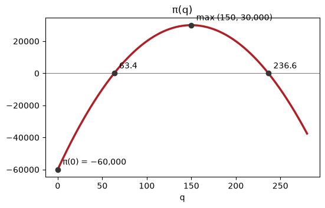
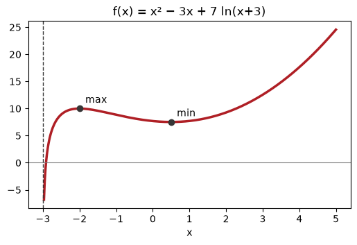

MBA03 · Week 3 — Studying a function, and adding one up
European School of Economics · Thu 8 Oct 2026 · Tutor: Niccolò Salvini
Today is the mathematical content of the midterm: the seven-step study, optimisation, and integration.
# Setup (Colab has numpy, matplotlib, plotly and sympy preinstalled; this is a no-op there)import subprocess, systry:import plotly, sympy, matplotlibexceptImportError: subprocess.run([sys.executable, "-m", "pip", "install", "-q", "plotly", "sympy", "matplotlib"])import numpy as np, plotly.graph_objects as go, sympy as spimport matplotlib.pyplot as pltq = sp.Symbol("q", positive=True)print("ready")
ready
A. The seven steps, done by machine so you can check yourself
Do it on paper first. This cell is the answer key, not the method.
def study(f, name="f"): fp, fpp = sp.diff(f, q), sp.diff(f, q, 2)print(f"{name}(q) = {f}")print(" 1 domain :", sp.calculus.util.continuous_domain(f, q, sp.Interval(0, sp.oo)))print(" 2 zeros :", [round(float(r), 3) for r in sp.solve(f, q) if r.is_real])print(f" 3 f' : {fp}") stat = sp.solve(fp, q)print(" 4 stationary :", stat)for s in stat: kind ="maximum"if fpp.subs(q, s) <0else ("minimum"if fpp.subs(q, s) >0else"unclear")print(f" 5 at q={float(s):.3f}: f''={float(fpp.subs(q, s)):.3f} → {kind}, f={float(f.subs(q, s)):,.2f}")print(" 6 f'' :", fpp, " inflection at:", sp.solve(fpp, q))print(" 7 as q→∞ :", sp.limit(f, q, sp.oo))study(-4*q**2+1200*q -60000, "π")
Unable to display output for mime type(s): application/vnd.plotly.v1+json
Cs = sp.Rational(4,10)*q**2+3*q +25ACs = sp.simplify(Cs/q)qm = [s for s in sp.solve(sp.diff(ACs, q), q) if s.is_real and s >0][0]print(f"AC is lowest at q = {float(qm):.4f}")print(f" AC there = {float(ACs.subs(q, qm)):.4f}")print(f" MC there = {float(sp.diff(Cs, q).subs(q, qm)):.4f} ← equal, and not by accident")
AC is lowest at q = 7.9057
AC there = 9.3246
MC there = 9.3246 ← equal, and not by accident
C. Optimisation — marginal revenue equals marginal cost
A firm with log revenue. Change the 30 and watch the optimum move.
for a in (20, 30, 40, 60): pi = a*sp.log(q +1) - Cs root = [r for r in sp.solve(sp.Eq(sp.diff(pi, q), 0), q) if r.is_real and r >0]if root: qs_ =float(root[0])print(f"R = {a} ln(q+1): q* = {qs_:6.3f}, π(q*) = {float(pi.subs(q, root[0])):>8,.2f}k")
R = 20 ln(q+1): q* = 2.811, π(q*) = -9.84k
R = 30 ln(q+1): q* = 3.901, π(q*) = 4.89k
R = 40 ln(q+1): q* = 4.829, π(q*) = 21.70k
R = 60 ln(q+1): q* = 6.394, π(q*) = 59.50k
🔍 CHECK
One of those rows has a positive optimum and a negative profit. Find it, and say what a manager should do in that case. Maximising profit and making a profit are not the same thing.
D. Integration — thinner slices, truer area
MC(q) = 0.8q + 3. What do the first twenty bikes cost in total?
mc =lambda x: 0.8*x +3exact =0.4*20**2+3*20for n in (4, 8, 20, 60, 500): dx =20/n left =sum(mc(i*dx)*dx for i inrange(n))print(f"n = {n:>3} left-endpoint sum = {left:7.2f} (exact {exact})")
n = 4 left-endpoint sum = 180.00 (exact 220.0)
n = 8 left-endpoint sum = 200.00 (exact 220.0)
n = 20 left-endpoint sum = 212.00 (exact 220.0)
n = 60 left-endpoint sum = 217.33 (exact 220.0)
n = 500 left-endpoint sum = 219.68 (exact 220.0)
∫ (q⁵ − 3q³ + 2)/q² dq = q**4/4 - 3*q**2/2 - 2/q + c
∫₀²⁰ (0.8q + 3) dq = 220
∫₁₀₀¹⁵⁰ π'(q) dq = 10000
π(150) − π(100) = 10000 ← the same number
The integral of the marginal is the change in the total. That sentence is the whole of integration.
Drills, solved in code
This section is an optional companion: the code is not examined, the exam is on paper. Every drill in drills.md is solved here, one cell per question, with sympy doing the algebra you would do by hand. Do the drill on paper first, then run the cell and compare.
# Symbols used in every drill below (real numbers, as on paper)q, x, c = sp.symbols('q x c', real=True)def sketch(f, var, a, b, title, points=(), asymptote=None):# draw f between a and b, mark the (value, label) points, dash a vertical asymptote xs = np.linspace(a, b, 400) plt.figure(figsize=(6, 3.5)) plt.plot(xs, sp.lambdify(var, f, "numpy")(xs), color="#AF1F25", lw=2.5) plt.axhline(0, color="grey", lw=0.8)if asymptote isnotNone: plt.axvline(asymptote, color="#363636", ls="--", lw=1)for px, label in points: py =float(f.subs(var, px)) plt.plot(px, py, "o", color="#363636") plt.annotate(label, (px, py), textcoords="offset points", xytext=(6, 6)) plt.title(title); plt.xlabel(str(var)); plt.show()print("symbols and sketch() ready")
symbols and sketch() ready
D1 — the full study of a profit function
Study \(\pi(q) = -4q^2 + 1200q - 60{,}000\) completely: domain, zeros, sign, \(\pi'\) and the stationary point, \(\pi''\) and its nature, behaviour as \(q \to \infty\), and a labelled sketch.
pi =-4*q**2+1200*q -60000# 1 domain: a polynomial, every real q (for a quantity, q >= 0)zeros =sorted(sp.solve(pi, q)) # 2 zerosprint("zeros:", zeros, "≈", [round(float(z), 1) for z in zeros])# 3 sign: a = -4 < 0, so positive between the zeros; test one point inside, one outsideprint("sign at q = 150:", sp.sign(pi.subs(q, 150)), " sign at q = 0:", sp.sign(pi.subs(q, 0)))d1 = sp.diff(pi, q) # 4 stationary pointq_star = sp.solve(d1, q)[0]d2 = sp.diff(pi, q, 2) # 5 natureprint(f"π'(q) = {d1} = 0 at q = {q_star}; π''(q) = {d2} < 0 → maximum")top =int(pi.subs(q, q_star))print("6 behaviour: as q → ∞, π →", sp.limit(pi, q, sp.oo))assert [round(float(z), 1) for z in zeros] == [63.4, 236.6] and q_star ==150and top ==30000print(f"Answer: π > 0 between q ≈ 63.4 and 236.6; maximum at q = {q_star} with π = €{top:,}; π(0) = −€60,000.")sketch(pi, q, 0, 280, "π(q)", [(0, "π(0) = −60,000"), (zeros[0], "63.4"), (zeros[1], "236.6"), (150, "max (150, 30,000)")])
zeros: [150 - 50*sqrt(3), 50*sqrt(3) + 150] ≈ [63.4, 236.6]
sign at q = 150: 1 sign at q = 0: -1
π'(q) = 1200 - 8*q = 0 at q = 150; π''(q) = -8 < 0 → maximum
6 behaviour: as q → ∞, π → -oo
Answer: π > 0 between q ≈ 63.4 and 236.6; maximum at q = 150 with π = €30,000; π(0) = −€60,000.

D2 (a) — domain and \(C(0)\)
\(C(q) = 0.4q^2 + 3q + 25\) (€ thousand), \(q \ge 0\). Domain, and \(C(0)\). What is \(C(0)\) called?
C = sp.Rational(2, 5)*q**2+3*q +25# 0.4 written as 2/5 so sympy stays exact# a polynomial is defined everywhere; a quantity cannot be negative → [0, +∞)fixed = C.subs(q, 0)assert fixed ==25print(f"Answer: domain [0, +∞); C(0) = {fixed}, the fixed cost: what the firm pays having produced nothing.")
Answer: domain [0, +∞); C(0) = 25, the fixed cost: what the firm pays having produced nothing.
D2 (b) — average cost and its limits
\(AC(q) = C(q)/q\). Find its domain, \(\lim_{q\to 0^+} AC(q)\) and \(\lim_{q\to\infty} AC(q)\).
AC = sp.expand(C / q)dom = sp.calculus.util.continuous_domain(AC, q, sp.Interval(0, sp.oo))lim0 = sp.limit(AC, q, 0, '+') # fixed cost spread over almost nothinglimoo = sp.limit(AC, q, sp.oo) # the 0.4q term takes overprint("AC(q) =", AC, " domain:", dom)assert dom == sp.Interval.open(0, sp.oo) and lim0 == sp.oo and limoo == sp.ooprint(f"Answer: domain (0, +∞); AC → {lim0} as q → 0⁺ and AC → {limoo} as q → ∞, so AC falls then rises.")
AC(q) = 2*q/5 + 3 + 25/q domain: Interval.open(0, oo)
Answer: domain (0, +∞); AC → oo as q → 0⁺ and AC → oo as q → ∞, so AC falls then rises.
D2 (c) — minimise average cost
Minimise \(AC(q)\). At that quantity compute \(AC\) and \(C'(q)\), and comment.
dAC = sp.diff(AC, q) # 2/5 − 25/q²q_min = [s for s in sp.solve(dAC, q) if s >0][0] # keep the positive rootprint("AC'(q) =", dAC, "= 0 at q =", q_min, "≈", round(float(q_min), 2))print("AC''(q_min) =", sp.diff(AC, q, 2).subs(q, q_min), "> 0 → minimum")ac_min =float(AC.subs(q, q_min))mc_min =float(sp.diff(C, q).subs(q, q_min))assertround(float(q_min), 2) ==7.91andround(ac_min, 2) ==9.32andround(mc_min, 2) ==9.32print(f"Answer: AC is lowest at q ≈ {float(q_min):.2f}, where AC = {ac_min:.2f} and C' = {mc_min:.2f}: they are equal.")
AC'(q) = 2/5 - 25/q**2 = 0 at q = 5*sqrt(10)/2 ≈ 7.91
AC''(q_min) = 4*sqrt(10)/125 > 0 → minimum
Answer: AC is lowest at q ≈ 7.91, where AC = 9.32 and C' = 9.32: they are equal.
D2b (a) — domain
\(f(x) = x^2 - 3x + 7\ln(x+3)\). State the domain as an interval.
f = x**2-3*x +7*sp.log(x +3)# the log needs x + 3 > 0dom = sp.solve_univariate_inequality(x +3>0, x, relational=False)assert dom == sp.Interval.open(-3, sp.oo)print("Answer: the domain is", dom, " i.e. (−3, +∞), open because ln 0 is undefined.")
Answer: the domain is Interval.open(-3, oo) i.e. (−3, +∞), open because ln 0 is undefined.
D2b (b) — the left end
Evaluate \(\lim_{x\to -3^+} f(x)\) and say what it tells you about the graph.
print("x² − 3x at x = −3:", (x**2-3*x).subs(x, -3), " ln(x + 3) → −∞")left = sp.limit(f, x, -3, '+')assert left ==-sp.ooprint(f"Answer: f → {left} as x → −3⁺, so x = −3 is a vertical asymptote: the curve plunges down it.")
x² − 3x at x = −3: 18 ln(x + 3) → −∞
Answer: f → -oo as x → −3⁺, so x = −3 is a vertical asymptote: the curve plunges down it.
D2b (c) — the right end
Evaluate \(\lim_{x\to +\infty} f(x)\).
right = sp.limit(f, x, sp.oo) # x² dominates the logassert right == sp.ooprint(f"Answer: f → {right} as x → +∞; the x² term wins.")
Answer: f → oo as x → +∞; the x² term wins.
D2b (d) — sketch
Sketch the shape, marking the asymptote.
# Not asked, but it helps the sketch: where does the curve turn?df = sp.factor(sp.together(sp.diff(f, x)))turns = sp.solve(df, x)print("f'(x) =", df, " → turning points at", turns)for t in turns:print(f" x = {t}: f = {float(f.subs(x, t)):.2f}, f'' = {float(sp.diff(f, x, 2).subs(x, t)):.2f}")print("Answer: up from −∞ along x = −3, a local max at x = −2, a local min at x = ½, then up to +∞.")sketch(f, x, -2.97, 5, "f(x) = x² − 3x + 7 ln(x+3)", [(-2, "max"), (sp.Rational(1, 2), "min")], asymptote=-3)
f'(x) = (x + 2)*(2*x - 1)/(x + 3) → turning points at [-2, 1/2]
x = -2: f = 10.00, f'' = -5.00
x = 1/2: f = 7.52, f'' = 1.43
Answer: up from −∞ along x = −3, a local max at x = −2, a local min at x = ½, then up to +∞.

D3 (a) — stationary points
\(f(q) = q^3 - 12q^2 + 36q\) on \([0, 10]\). Stationary points and their nature.
g = q**3-12*q**2+36*qdg = sp.diff(g, q)print("f'(q) =", dg, "=", sp.factor(dg))d2g = sp.diff(g, q, 2)for s in sp.solve(dg, q): kind ="maximum"if d2g.subs(q, s) <0else"minimum"print(f" q = {s}: f'' = {d2g.subs(q, s)} → {kind}, f = {g.subs(q, s)}")assert sp.solve(dg, q) == [2, 6] and g.subs(q, 2) ==32and g.subs(q, 6) ==0print("Answer: maximum at (2, 32), minimum at (6, 0).")
f'(q) = 3*q**2 - 24*q + 36 = 3*(q - 6)*(q - 2)
q = 2: f'' = -12 → maximum, f = 32
q = 6: f'' = 12 → minimum, f = 0
Answer: maximum at (2, 32), minimum at (6, 0).
D3 (b) — inflection point
infl = sp.solve(d2g, q)[0]print("f''(q) =", d2g, "= 0 at q =", infl)print("f'' at 3 and at 5:", d2g.subs(q, 3), d2g.subs(q, 5), "→ the sign changes, so it is an inflection")assert infl ==4and g.subs(q, 4) ==16print(f"Answer: inflection at ({infl}, {g.subs(q, infl)}).")
f''(q) = 6*(q - 4) = 0 at q = 4
f'' at 3 and at 5: -6 6 → the sign changes, so it is an inflection
Answer: inflection at (4, 16).
D3 (c) — sketch
assert g.subs(q, 10) ==160print("Answer: rises to (2, 32), falls to (6, 0), rises again to (10, 160).")sketch(g, q, 0, 10, "f(q) = q³ − 12q² + 36q", [(2, "max (2, 32)"), (4, "inflection (4, 16)"), (6, "min (6, 0)"), (10, "(10, 160)")])
Answer: rises to (2, 32), falls to (6, 0), rises again to (10, 160).
Leave it as an equation in \(q\) first, then solve the quadratic it becomes.
print("Equation: 30/(q + 1) = 0.8q + 3")# multiply both sides by (q + 1), bring everything to one side, then multiply by 5quadratic = sp.expand(5*((sp.Rational(4, 5)*q +3)*(q +1) -30))print("Quadratic:", quadratic, "= 0")delta =19**2-4*4*(-135)roots = sp.solve(quadratic, q)print("Δ =", delta, " roots ≈", [round(float(r), 2) for r in roots])q_opt = [r for r in roots if r >0][0] # a quantity cannot be negativeassert quadratic ==4*q**2+19*q -135and delta ==2521andround(float(q_opt), 2) ==3.90print(f"Answer: q ≈ {float(q_opt):.2f} (the negative root is discarded).")
d2profit = sp.diff(profit, q, 2)print("π''(q) =", d2profit, " (both terms negative for every q ≥ 0)")value =float(d2profit.subs(q, q_opt))assert value <0print(f"Answer: π''({float(q_opt):.2f}) = {value:.2f} < 0, so it is a maximum.")
π''(q) = -2*(2/5 + 15/(q + 1)**2) (both terms negative for every q ≥ 0)
Answer: π''(3.90) = -2.05 < 0, so it is a maximum.
D4 (e) — profitable?
Is the firm profitable at that quantity? Answer with a number.
best =float(profit.subs(q, q_opt))print(f"30 ln(q+1) = {float(R.subs(q, q_opt)):.2f}, C(q) = {float(C.subs(q, q_opt)):.2f}")assertround(best, 2) ==4.89print(f"Answer: π({float(q_opt):.2f}) ≈ €{best:.2f}k > 0: profitable, but only just.")
30 ln(q+1) = 47.68, C(q) = 42.79
Answer: π(3.90) ≈ €4.89k > 0: profitable, but only just.
D5 (a) — the condition in words
For the firm in D4, write \(\pi'(q) = 0\) as \(R'(q) = C'(q)\), in words.
MR = sp.diff(R, q) # marginal revenueMC = sp.diff(C, q) # marginal costprint("R'(q) =", MR, " C'(q) =", MC)assert sp.simplify(MR - MC - dprofit) ==0# π' is exactly R' − C'print("Answer: π' = R' − C' = 0 means R'(q) = C'(q): produce up to where one more unit brings in what it costs.")
R'(q) = 30/(q + 1) C'(q) = 4*q/5 + 3
Answer: π' = R' − C' = 0 means R'(q) = C'(q): produce up to where one more unit brings in what it costs.
D5 (b) — at \(q = 2\)
Compute \(R'(2)\) and \(C'(2)\). Which is larger, and what should the firm do?
mr2, mc2 = MR.subs(q, 2), MC.subs(q, 2)print(f"R'(2) = {mr2}, C'(2) = {float(mc2)}")assert mr2 ==10and mc2 == sp.Rational(23, 5)print(f"Answer: MR ({mr2}) > MC ({float(mc2)}): each extra unit still adds {float(mr2 - mc2)}, so produce more, up to q ≈ 3.90.")
R'(2) = 10, C'(2) = 4.6
Answer: MR (10) > MC (4.6): each extra unit still adds 5.4, so produce more, up to q ≈ 3.90.
D6 — the box
A box with a square base and no lid must hold 32 m³. Minimise the material: \(S = x^2 + 4xh\), with \(x^2 h = 32\).
side = sp.Symbol('x', positive=True) # a length, so positiveh =32/ side**2# from the volume constraintS = side**2+4*side*hprint("S(x) =", sp.simplify(S))x_best = sp.solve(sp.diff(S, side), side)[0]print("S'(x) = 0 at x =", x_best, " S''(x) =", sp.diff(S, side, 2).subs(side, x_best), "> 0 → minimum")assert x_best ==4and h.subs(side, 4) ==2and S.subs(side, 4) ==48print(f"Answer: base {x_best} m × {x_best} m, height {h.subs(side, x_best)} m, surface {S.subs(side, x_best)} m².")
S(x) = (x**3 + 128)/x
S'(x) = 0 at x = 4 S''(x) = 6 > 0 → minimum
Answer: base 4 m × 4 m, height 2 m, surface 48 m².
D7 (a)
\(\displaystyle\int \frac{q^5 - 3q^3 + 2}{q^2}\,dq\), splitting term by term.
split = sp.expand((q**5-3*q**3+2) / q**2) # divide each term by q² firstprint("split:", split)F = sp.integrate(split, q) # then each term is a powerassert sp.simplify(F - (q**4/4- sp.Rational(3, 2)*q**2-2/q)) ==0print("Answer:", F, "+ c")
(−3)³ = -27 (−3)² = 9 ← the two traps
f(−3) = c - 126 = 17 → c = 143
Answer: f(x) = 4*x**3 - 2*x**2 + 143
D8c (a)
\(\displaystyle\int \frac{1}{q-4}\,dq\) — is the top the derivative of the bottom?
top, bottom =1, q -4k = sp.simplify(top / sp.diff(bottom, q)) # how many times the derivative fits in the topprint("bottom' =", sp.diff(bottom, q), " top / bottom' =", k)assert k ==1and sp.simplify(sp.diff(k*sp.log(bottom), q) - top/bottom) ==0print("Answer: ln|q − 4| + c")
bottom' = 1 top / bottom' = 1
Answer: ln|q − 4| + c
D8c (b)
\(\displaystyle\int \frac{q}{q^2+5}\,dq\)
top, bottom = q, q**2+5k = sp.simplify(top / sp.diff(bottom, q)) # a factor ½ is missingprint("bottom' =", sp.diff(bottom, q), " top / bottom' =", k)assert k == sp.Rational(1, 2) and sp.simplify(sp.diff(k*sp.log(bottom), q) - top/bottom) ==0print("Answer: ½ ln(q² + 5) + c (no modulus needed: q² + 5 > 0 always)")
bottom' = 2*q top / bottom' = 1/2
Answer: ½ ln(q² + 5) + c (no modulus needed: q² + 5 > 0 always)
bottom' = 2*q + 3 top / bottom' = 1
Answer: ln|q² + 3q − 1| + c
D8c (d)
\(\displaystyle\int \frac{5}{2q+1}\,dq\)
top, bottom =5, 2*q +1k = sp.simplify(top / sp.diff(bottom, q)) # 5/2 comes out in frontprint("bottom' =", sp.diff(bottom, q), " top / bottom' =", k)assert k == sp.Rational(5, 2) and sp.simplify(sp.diff(k*sp.log(bottom), q) - top/bottom) ==0print("Answer: (5/2) ln|2q + 1| + c")
bottom' = 2 top / bottom' = 5/2
Answer: (5/2) ln|2q + 1| + c
D9 (a)
\(\displaystyle\int_0^{20} (0.8q + 3)\,dq\), where \(0.8q + 3\) is marginal cost. What does it measure?
F = sp.integrate(sp.Rational(4, 5)*q +3, q) # 0.4q² + 3qtotal = F.subs(q, 20) - F.subs(q, 0)print("[", F, "] from 0 to 20 =", F.subs(q, 20), "−", F.subs(q, 0))assert total ==220print(f"Answer: {total} (€ thousand), the total variable cost of the first 20 bikes.")
[ 2*q**2/5 + 3*q ] from 0 to 20 = 220 − 0
Answer: 220 (€ thousand), the total variable cost of the first 20 bikes.
D9 (b)
\(\displaystyle\int_1^4 \frac{6}{q}\,dq\), in terms of \(\ln\).
F =6*sp.log(q) # q is positive between 1 and 4total = F.subs(q, 4) - F.subs(q, 1) # ln 1 = 0print("6 ln 4 − 6 ln 1 =", total)assert sp.simplify(total -6*sp.log(4)) ==0andround(float(total), 2) ==8.32print(f"Answer: 6 ln 4 ≈ {float(total):.2f}")
6 ln 4 − 6 ln 1 = 6*log(4)
Answer: 6 ln 4 ≈ 8.32
D9b — two logs, neither is \(1/x\)
\(\displaystyle\int_0^{1/2} \left[\frac{1}{x-1} + \frac{x}{x^2-1}\right] dx\), in terms of \(\ln\).
integrand =1/(x -1) + x/(x**2-1)# each term is a log; keep the modulus: on [0, ½] both x − 1 and x² − 1 are negativeF = sp.log(sp.Abs(x -1)) + sp.log(sp.Abs(x**2-1)) /2half = sp.Rational(1, 2)print("F(½) =", F.subs(x, half), " F(0) =", F.subs(x, 0))total = F.subs(x, half) - F.subs(x, 0)numeric = sp.Integral(integrand, (x, 0, half)).evalf() # independent numerical checkassert sp.simplify(total - (sp.log(half) + sp.log(sp.Rational(3, 4))/2)) ==0assertround(float(total), 4) ==-0.8370andabs(numeric - total) <1e-10print(f"Answer: ln(½) + ½ ln(¾) ≈ {float(total):.4f}")
Check against \(\pi(150) - \pi(100)\) with \(\pi(q) = -4q^2 + 1200q - 60{,}000\).
print("π(150) =", pi.subs(q, 150), " π(100) =", pi.subs(q, 100))difference =int(pi.subs(q, 150) - pi.subs(q, 100))assert difference == change ==10000print(f"Answer: €{difference:,}, the same number: the integral of the marginal is the change in the total.")
π(150) = 30000 π(100) = 20000
Answer: €10,000, the same number: the integral of the marginal is the change in the total.
Homework
homework.md — seven drills plus a 400–500 word Board report: a dry run of the midterm, sketch included. Due Wednesday 14 October, 23:59.